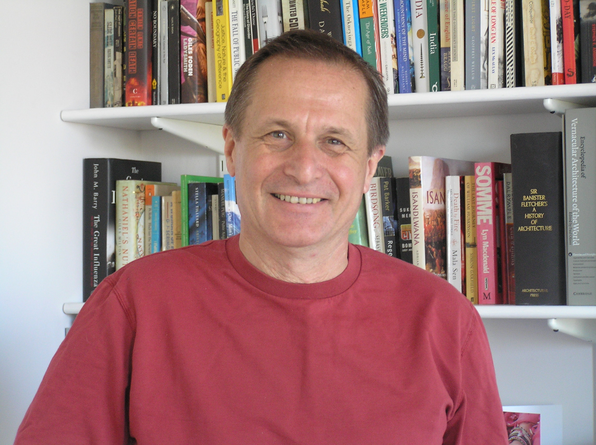
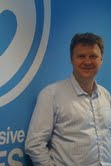

We're delighted to welcome two inspiring individuals as invited speakers at SPA2010:
Maurice Mitchell
Maurice Mitchell is Reader in the Department of Architecture and Spatial Design at London Metropolitan University where he runs a Diploma Studio. He has taught at the Architectural Association, and the Development Planning Unit, University College London, and has for many years run exploratory architecture courses at the Centre for Alternative Technology in Wales.
His early career included extended periods of work in the shanty towns of Ghana and as advisor to the Southern Regional Government of Sudan: more recently his work has taken him to Kosovo, and to marginal settlements throughout India.
A recognised expert in the Architecture of Rapid Change and Scarce Resources, in June 2008 he guest-edited the special edition of Open House International on this subject. Maurice is the author of three books: Culture, Cash and Housing (1992), The Lemonade Stand: Exploring the unfamiliar by building large scale models (1998), and Rebuilding Community in Kosovo (2003).
Maurice's talk - Complexity and the Human Dimension: A Question of Fit - will look at the relative appropriateness of loose or tight fit construction together with that of open or integrated approaches in analyzing and intervening in complex rapidly changing situations where resources are scarce.
Harvey Wheaton
 Harvey Wheaton is Studio Director of Supermassive Games, a brand new new games development Studio working primarily on innovative games for Playstation 3 which he founded after several years as Director of Product Development for Criterion Games, a subsidiary of Electronic Arts.
Harvey has a passion for Project Management and has spent his career seeing first-hand the highs and lows of software development – both as an engineer and manager. He has worked in a diverse range of industries with a wide variety of approaches: he credits the experiences as giving him a strong perspective on the challenges faced by project teams and managers, particularly in the high-pressure, fashion-driven multi-disciplinary world of games development. He has been engaged with applying and promoting Agile development within complex, highly creative environments: his passion for Agile is driven by his determination to continually improve how projects are run to deliver predictability and quality whilst ensuring every member on the team actually participates and enjoys the experience.
Harvey is a member of the board of directors for the Scrum Alliance.